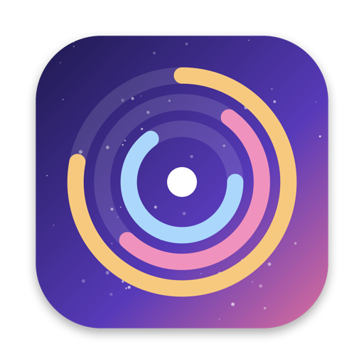

What grew since last time
Every scan is compared with the previous one, and Hubble points at the exact folder where the growth happened, not just “Library got bigger”.
Your disk filled up again? Hubble maps everything on your Mac, shows what grew since the last scan, and finds the build folders and caches you can safely delete.
Other disk tools show you a snapshot. Hubble remembers, so it can tell you what changed.
Every scan is compared with the previous one, and Hubble points at the exact folder where the growth happened, not just “Library got bigger”.
Built-in rules find target next to Cargo.toml, node_modules, .build, DerivedData and caches. Add your own and trash them in bulk.
A pool of workers reads directories in bulk with getattrlistbulk. Millions of files in about a minute, several times faster than du.
Get notified when free space drops below a threshold, the disk passes a percentage, or a folder grows too much in a day, a week or a month.
Automatic low-priority scans run when your Mac is idle, from the menu bar, even with the window closed. You only hear from Hubble when something changed.
No account, no analytics, no network calls. Your file list never leaves your Mac, and deletions go to the Trash so nothing is lost by accident.
Grab Hubble.zip from the latest release and drag Hubble.app into Applications.
Hubble isn't notarized yet. If macOS blocks it, open System Settings › Privacy & Security and click Open Anyway.
Hit Scan (⌘R). For the full picture, grant Full Disk Access when Hubble asks for protected folders.
Prefer the terminal? xattr -dr com.apple.quarantine /Applications/Hubble.app clears the download flag. Or build from source with ./scripts/build-app.sh.

Free, open source, and built for people whose disks fill up faster than they'd like.